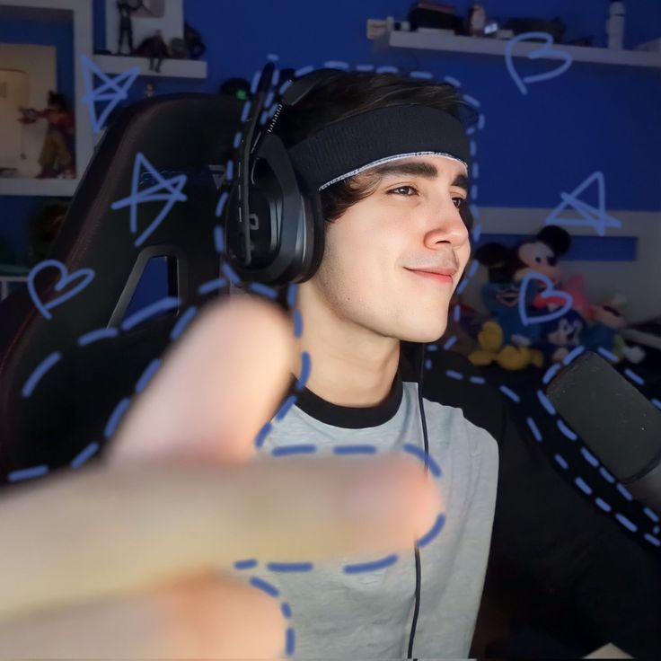

Roier, Nacido el 9 de Agosto de 2001 en Monterrey, Mexico es un popular creador de contenido y streamer mexicano, reconocido por su humoristico estilo en gameplays de juegos como minecraft, especialmente en QSMP, y Fornite. Con millones de seguidores, destaca por su energia y carisma y por sus personajes en servidoores multijugador. Juega con personas de muchos paises como Brasil, Colombia, Argantina, Estados Unidos, Francia, etc. Sube videos en Youtube y hace directos en Twitch, El inicio en Youtube el 19 de Abril de 2012 acumulando mas de 1 millon de suscriptores y mas de 1000 videos. Se hizo mas popular al unirse al servidor QSMP en marzo de 2023, en que hizo su presencia en la comunidad hispana
Vive:Monterrey, Nuevo Leon, Mexico